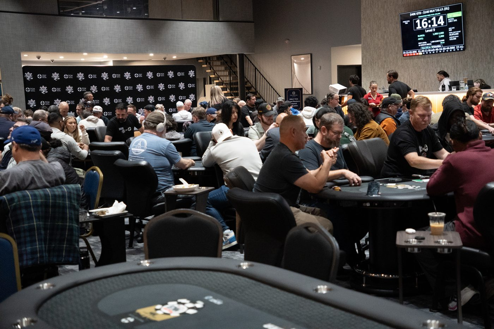

Tournaments
Find your next tournament.
Compare structures, scores and event details. Real event archive · Times shown in Central Time.
Scores are grouped by curve. Real archival events are retained without invented scores or future schedules.
How to choose a tournament
01 · Check the curve
Compare scores within Curve 1, Curve 2 or Curve 3. The same raw score carries different grades.
02 · Compare the details
Review buy-in, fees, starting chips and the full blind schedule.
03 · Confirm with the room
Check the current official schedule and rules before registering.